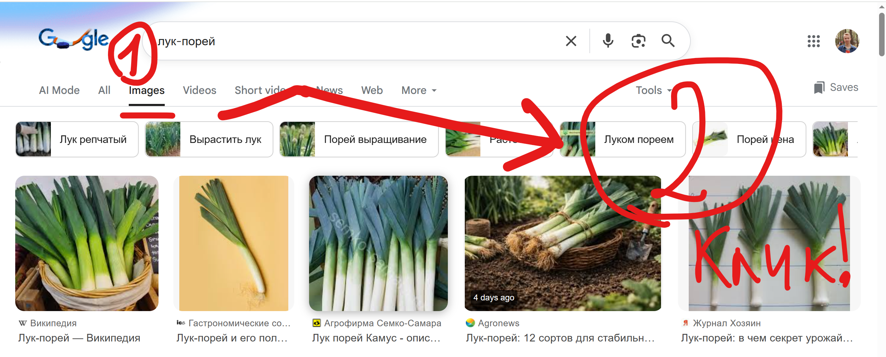

Tilda
Как скачать картинку с интернета
- Вводим описание картинки в гугл поиске, например "лук-порей", и нажимаем Enter
-
На открывшейся странице нажимаем вкладку "Картинки" и кликаем на нужную картинку:
 -
На открывшейся странице нажимаем вкладку "Картинки":
- Кликаем правой кнопкой мыши на картинке и выбираем "Сохранить картинку как" – сохраняем куда-нибудь, например на Рабочий стол